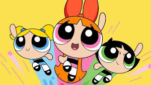

Bem-vindo ao início da sua jornada com as Meninas Super Poderosas! Você está começando sua missão para proteger Townsville. Sua primeira decisão é escolher entre melhorar suas habilidades de combate ou fortalecer sua união como equipe.
Você decide melhorar suas habilidades de combate, treinando intensamente em técnicas de luta e uso de poderes. Seus novos poderes tornam-se mais eficazes e você está pronta para enfrentar qualquer ameaça.
Você decide fortalecer a união da equipe, trabalhando em estratégias e aprendendo a colaborar melhor. Essa nova coesão faz com que o time se torne mais eficiente em enfrentar vilões juntos.
Com suas habilidades de combate aprimoradas, você enfrenta o Demônio da Neve e consegue derrotá-lo com eficácia. Townsville está segura, e sua habilidade é reconhecida por todos.
Fortalecer a união da equipe ajuda a enfrentar o Demônio da Neve de maneira muito coordenada. Vocês derrotam o vilão e a cidade de Townsville aprecia a força do trabalho em equipe.
Você recebe a Medalha de Heroína e continua a proteger Townsville com grande sucesso. Sua bravura e habilidades são admiradas por todos, e você se torna uma lenda entre os heróis.
Parabéns! Você é uma verdadeira heroína.
Receber a Medalha de Heroína após derrotar o Demônio da Neve destaca o valor do trabalho em equipe. Sua equipe se torna um exemplo para todos os heróis e continua a proteger a cidade com sucesso.
Parabéns! Sua equipe é um modelo de colaboração e heroísmo.